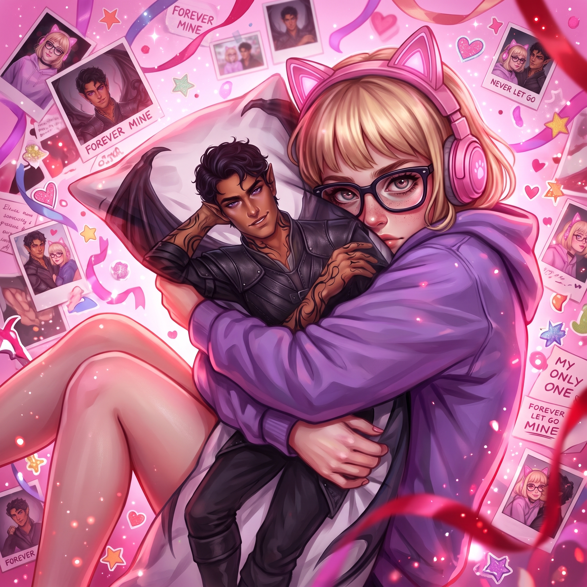

Добро пожаловать, путник
Здесь ты найдешь карточки персонажей, созданные для погружения в глубины ACOTAR, а также кастомные темы оформления для SillyTavern. Выбирай, скачивай и наслаждайся игрой.

Погрузись в мир, где песок времени встречается с лунным светом.
Здесь ты найдешь карточки персонажей, созданные для погружения в глубины ACOTAR, а также кастомные темы оформления для SillyTavern. Выбирай, скачивай и наслаждайся игрой.